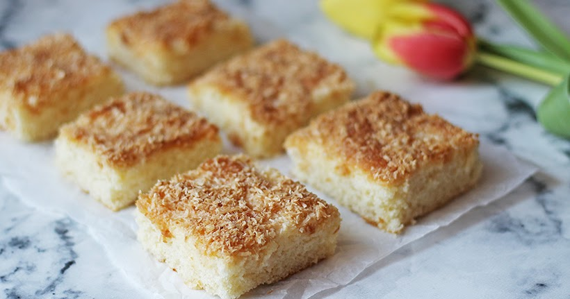

Kokosovo smetanový řez★
 16 porcí
16 porcí 25 minut
25 minut Sladké
Sladké
 4391 kcal
·
329g cukru
·
231g tuku
·
54g proteinu
4391 kcal
·
329g cukru
·
231g tuku
·
54g proteinu
Za málo peněz a času hodně muziky.

½ hrnkucukr krystalu2kscelé vejce1 hrnekmléka2 hrnkypolohrubé mouky½ hrnkurostlinného oleje1 baleníprášku do pečiva
Ingredience na těsto
1 hrnekstrouhaného kokosu½ hrnkucukr krupice1 balení33% šlehačky
Ingredience na posyp
Předehřejeme troubu na
170°C.
½ hrnkucukr krystalu2kscelé vejce
Utřeme vejce s krystalovým cukrem.
1 hrnekmléka2 hrnkypolohrubé mouky½ hrnkurostlinného oleje1 baleníprášku do pečiva
Přidáme mléko, polohrubou mouku s práškem do pečiva a olej.
Vše důkladně promícháme.
Vyleje na plech vyložený pečícím papírem.
1 hrnekstrouhaného kokosu½ hrnkucukr krupice
Smícháme kokos a cukr v oddělené nadobě.
Posypeme směsí těsto.
Pečeme
20 minutnebo dozlatova na170°C.
1 baleníšlehačky
Hned po vyndání z trouby, zalijeme 33% šlehačkou.